Show the code
sf.world <- world
st_crs(sf.world)$input[1] "EPSG:4326"Michael Fehl, Joan Costa, Francesco Zucca and Xènia Alemany (Group A)
February 2, 2026
Q1. Combine the world shape world with population (point) data and with ports & airports data.
Q2. Create maps & histograms regarding country-level population and average distances to nearest port/airport, segmented by continent.
Goal : Combine the world shape world with:
The data comes from two different sources, the spData library (which contains the “world” shapefile) and Natural Earth (Data Source). Specifically, from Natural Earth we download:
First of all, we load the datasets.
[1] "WGS 84"[1] "WGS 84"[1] "WGS 84"All datasets utilise the WGS84 coordinate reference system, hence no projection conversion is required.
For cleanliness, we filter the datasets to keep only the variables essential for this project.
sf.world <- sf.world %>%
select(name_long, continent, area_km2, geom) %>% # we are dropping pop because we will later compute it using the cities dataset
rename(name = name_long) %>%
# Adding type column
mutate(type = "COUNTRY") %>%
relocate(type, .before = everything())
sf.cities <- sf.cities %>%
select(NAME, geometry, POP_MAX) %>% # keeping population to be able to rank the cities
rename(name = NAME, geom = geometry, pop = POP_MAX) %>%
# Adding type column
mutate(type = "CITY") %>%
relocate(type, .before = everything())
sf.airports <- sf.airports %>%
select(name, geometry, scalerank) %>% # keeping scalerank to be able to rank the airports
rename(geom = geometry) %>%
# Adding type column
mutate(type = "AIRPORT") %>%
relocate(type, .before = everything())
sf.ports <- sf.ports %>%
select(name, geometry, scalerank) %>%
rename(geom = geometry) %>%
# Adding type column
mutate(type = "PORT") %>%
relocate(type, .before = everything())We need to identify the country and continent for every city, airport, and port. To do so, we will create an auxiliary dataset with only the country, continent, and geom columns of the world dataset, and then merge them based on their spatial information.
# Adding country column also to the world dataset
sf.world <- sf.world %>%
mutate(country = name)
# Creating the auxiliary dataset
sf.world.aux <- sf.world %>%
select(country, continent, geom)
# Adding the country and continent columns to the datasets
sf.cities <- st_join(sf.cities, sf.world.aux, join = st_intersects)
mean(is.na(sf.cities$country)) * 100 # computing percentage of NAs in the country column over the total observations[1] 6.442386[1] 11.64614[1] 28.58464Our operation generated a lot of NA’s, especially in the airport and port datasets. This probably happens because some coastal locations are mapped slightly outside the country borders. Therefore, when using st_intersect, they don’t intersect with any country in the world dataset, generating NA’s.
To fix this, we will undo the last step and try again using a 10km buffer.
# Reverting to the original datasets
sf.airports <- sf.airports %>%
select(- country, - continent)
sf.ports <- sf.ports %>%
select(- country, - continent)
# Adding the country and continent columns to the datasets
sf.airports <- st_join(sf.airports, sf.world.aux, join = st_is_within_distance, dist = 10000)
sf.airports <- sf.airports %>%
arrange(country)
mean(is.na(sf.airports$country)) * 100[1] 7.359307[1] 10.05435This buffer fixed a lot of the missing values. However, this operation may not be totally accurate. For example, since some small islands are missing from our world map, a port may be assigned to the wrong country if it is withing 10km of its borders. Also, ports on islands that are further than 10 km away from the coastline are still not detected.
# Aggregating population by country
country_pop <- sf.cities %>%
st_drop_geometry() %>% # dropping geometry since we don't need it for this
group_by(country) %>%
# Summing pop column of cities in the same country
summarise(pop = sum(pop, na.rm = TRUE))
# Joining the calculated population to the world dataset
sf.world <- sf.world %>%
left_join(country_pop, by = "country") %>%
# Moving geom to the last column for tidyness
relocate(geom, .after = everything())Now we will merge the datasets into one single dataset.
Produce:
For ease of use and code tidiness, we will use the unmerged datasets.
To visualize population distribution, we will combine the world dataset with the cities dataset. First, we will plot the countries, using a color gradient to show their total population. Then, we will overlay the cities, grouping them into seven size categories to highlight population concentration.
OECD classifies urban areas as:
We will also add two more categories:
Our categories are:
sf.cities <- sf.cities %>%
mutate(pop_cat = cut( # creating categorical column for population
pop,
# Binning the population data
breaks = c(- Inf, 5000, 50000, 200000, 500000,
1500000, 10000000, Inf),
# Adding labels
labels = c("Very Low", "Low", "Medium-Low", "Medium", "Medium-High",
"High", "Very high"),
right = FALSE
))
st_drop_geometry(sf.cities) %>%
count(pop_cat) # See if some categories do not contain many cities pop_cat n
1 Very Low 854
2 Low 2273
3 Medium-Low 2188
4 Medium 1020
5 Medium-High 702
6 High 286
7 Very high 19The distribution of the cities looks okay, with very few cities in the “Very High” category (as expected). The NA’s are two very small cities present in the dataset which have negative population, which won’t affect our final analysis.
To keep the map readable, we will limit the number of cities shown for each country based on its size. Larger countries will show more cities, while smaller countries will show fewer
# Auxiliary dataset
country_data <- sf.world %>%
st_drop_geometry() %>%
select(country, area_km2) # Keep only what we need
# Filtering cities based on Country Size
sf.cities.plot <- sf.cities %>%
# Join the area data to the cities
left_join(country_data, by = "country") %>%
# Define the "City Limit" rules
mutate(
max_cities = case_when(
area_km2 < 20000 ~ 1,
area_km2 < 100000 ~ 3,
area_km2 < 350000 ~ 6,
area_km2 < 1000000 ~ 10,
area_km2 < 5000000 ~ 15,
TRUE ~ 25
)
) %>%
# Applying the filter
group_by(country) %>%
arrange(desc(pop)) %>% # Sort largest to smallest
filter(row_number() <= max_cities) %>% # Keep only the allowed amount
ungroup()Finally, we generate our plot.
# Plotting
ggplot() +
# World map
geom_sf(data = sf.world, aes(fill = pop), color = "white", size = 0.05) +
scale_fill_gradient( # gradient based on the country's population
low = "#deebf7",
high = "#08306b",
name = "Country Pop",
trans = "log", # logarithmic scale so that the gradient is not completely skewed towards China and India
labels = scales::label_number(scale_cut = scales::cut_short_scale()), # formatting the labels to make them more readable
guide = guide_colorbar(
title.position = "left",
title.hjust = 0.5,
barwidth = 15,
barheight = 0.4,
order = 1
)
) +
guides(
# Hiding shape and size legends
shape = "none",
size = "none",
# Keepig the color and putting title on Left
color = guide_legend(
title.position = "left",
title.vjust = 0.5,
nrow = 1,
order = 2)) +
# Cleaning
coord_sf(datum = NA, expand = FALSE) +
theme_void() +
theme(
# Legend
legend.position = "bottom",
legend.box = "vertical",
legend.margin = margin(t = 10, b = 10, l = 10, r = 10),
legend.box.margin = margin(t = -10, b = -10, l = 0, r = 0),
# Image margins
plot.margin = margin(t = 10, r = 10, b = 0, l = 10, unit = "pt"),
# Text styles
legend.title = element_text(size = 8, face = "bold", color = "grey20"),
legend.text = element_text(size = 6, color = "grey30"),
legend.key.size = unit(0.4, "cm")
)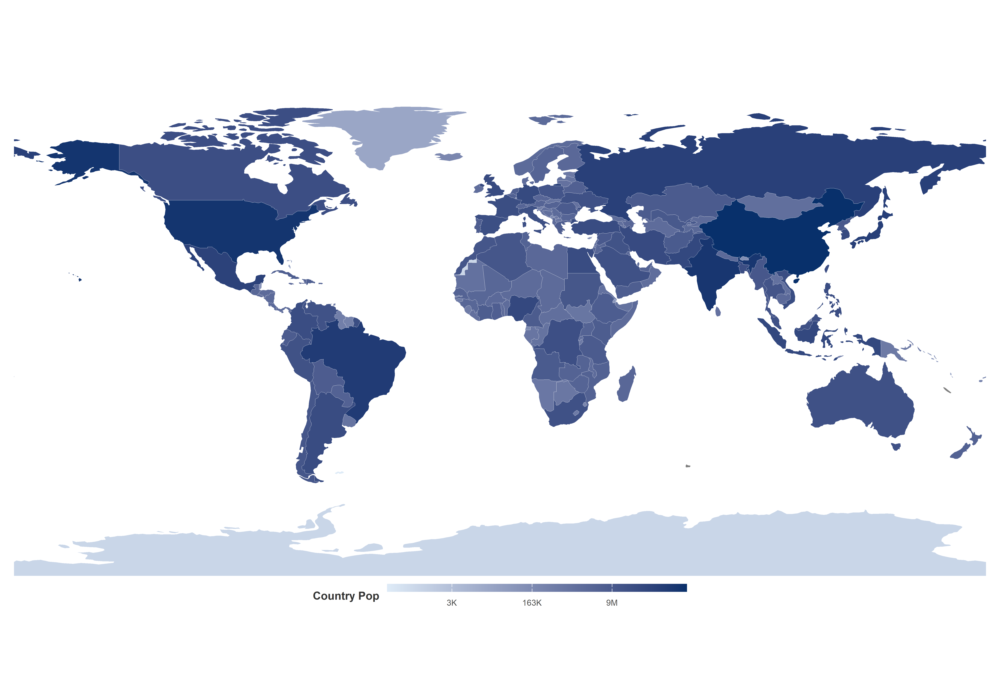
As a bonus, we can also visualize the world population map with the cities used to generate the population counts in each country, by their classifications:
# Defining custom shapes and colors
city_shapes <- c(
"Very low" = 16, "Low" = 16, "Medium-Low" = 16,
"Medium" = 16, "Medium-High" = 16, "High" = 16,
"Very high" = 18
)
city_colors <- c(
"Very low" = "#ffeda0",
"Low" = "#feb24c",
"Medium-Low" = "#fd8d3c",
"Medium" = "#fc4e2a",
"Medium-High" = "#e31a1c",
"High" = "#bd0026",
"Very high" = "#32cd32"
)
# Plotting
ggplot() +
# World map
geom_sf(data = sf.world, aes(fill = pop), color = "white", size = 0.05) +
scale_fill_gradient( # gradient based on the country's population
low = "#deebf7",
high = "#08306b",
name = "Country Pop",
trans = "log10", # logarithmic scale so that the gradient is not completely skewed towards China and India
labels = scales::label_number(scale_cut = scales::cut_short_scale()), # formatting the labels to make them more readable
guide = guide_colorbar(
title.position = "left",
title.hjust = 0.5,
barwidth = 15,
barheight = 0.4,
order = 1
)
) +
# Cities
geom_sf(
data = sf.cities.plot %>% arrange(pop_cat),
aes(color = pop_cat, shape = pop_cat, size = pop_cat),
alpha = 1
) +
# Scales
scale_shape_manual(values = city_shapes, name = "City Class") +
scale_color_manual(values = city_colors, name = "City Class") +
scale_size_manual(values = c(0.05, 0.1, 0.2, 0.3, 0.5, 0.8, 2), name = "City Class") +
guides(
# Hiding shape and size legends
shape = "none",
size = "none",
# Keepig the color and putting title on Left
color = guide_legend(
title.position = "left",
title.vjust = 0.5,
nrow = 1,
order = 2)) +
# Cleaning
coord_sf(datum = NA, expand = FALSE) +
theme_void() +
theme(
# Legend
legend.position = "bottom",
legend.box = "vertical",
legend.margin = margin(t = 10, b = 10, l = 10, r = 10),
legend.box.margin = margin(t = -10, b = -10, l = 0, r = 0),
# Image margins
plot.margin = margin(t = 10, r = 10, b = 0, l = 10, unit = "pt"),
# Text styles
legend.title = element_text(size = 8, face = "bold", color = "grey20"),
legend.text = element_text(size = 6, color = "grey30"),
legend.key.size = unit(0.4, "cm")
)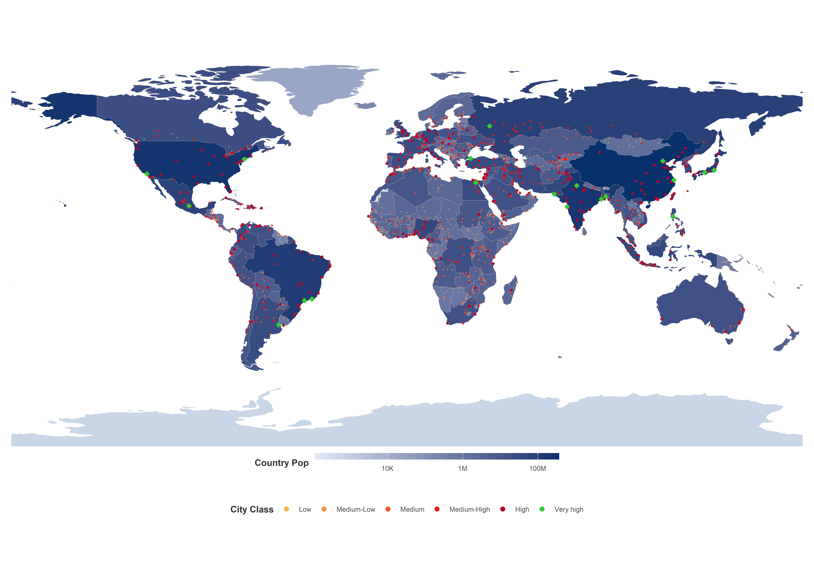
# Filter the data set to have only population and joint everything by country
sf.data_pop <- sf.data %>%
filter(type == 'CITY') %>%
group_by(country) %>%
summarize(population = sum(pop))
ggplot(sf.data_pop, aes(x = population)) +
geom_histogram(bins = 30, colour = '#08306b', fill = '#08519c') +
labs(x = 'Population',
y = 'Count',
title = 'World Population Distribution, by Country') +
scale_x_continuous(
labels = c("0", "100M", "200M", "300M"),
breaks = c(0, 100000000, 200000000, 300000000)
) +
theme_minimal()+
theme(plot.title = element_text(hjust=0.5))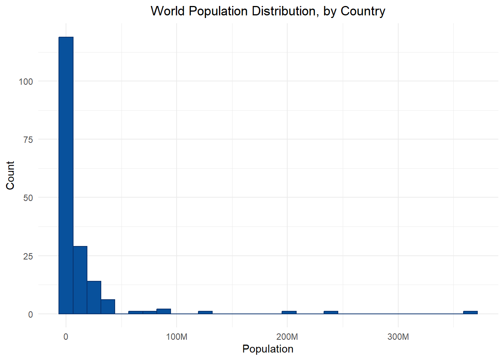
Because the histogram with the current non-modified data is skewed to the left due to some extreme values from China, USA, India etc, we decided to compute the histogram applying a log scale to the population.
# Compute the log of the population variable
sf.data_pop <- sf.data_pop %>%
mutate(log_pop = log(population))
ggplot(sf.data_pop, aes(x = log_pop)) +
geom_histogram(bins = 30, colour = '#08306b', fill = '#08519c') +
labs(x = 'Log Population',
y = 'Count',
title = 'World Population Distribution, by Country (log scale)') +
theme_minimal() +
theme(plot.title = element_text(hjust=0.5))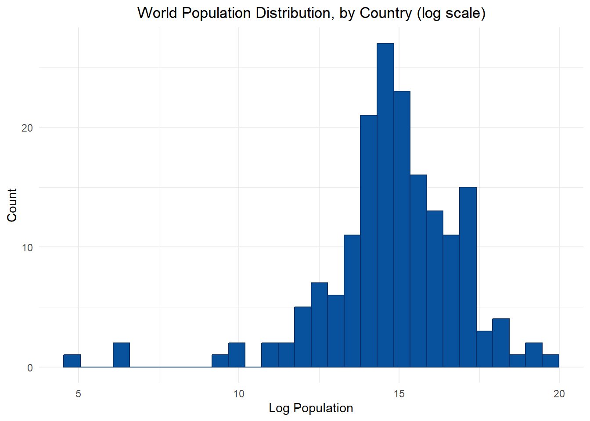
To have a more detailed information on the population density we decided to compute the same log histograms for each of the continents.
sf.data_pop <- sf.data_pop %>%
left_join(sf.world.aux %>%
st_drop_geometry() %>%
select(country, continent),
by = 'country')
ggplot(sf.data_pop, aes(x = log_pop)) +
geom_histogram(bins = 30, aes(fill = continent), colour = 'black') +
facet_wrap(~ continent, scales = "free_y") +
labs(
title = 'Distribution of Country Population by Continent',
x = 'Population',
y = 'Number of Countries'
) +
theme_minimal() +
theme(
plot.title = element_text(face = "bold", size = 14, hjust=0.5),
plot.subtitle = element_text(size = 11, color = "gray40", hjust=0.5),
strip.text = element_text(face = "bold", size = 11),
strip.background = element_rect(fill = "gray90", colour = NA),
panel.spacing = unit(1, "lines"),
legend.position = "none"
)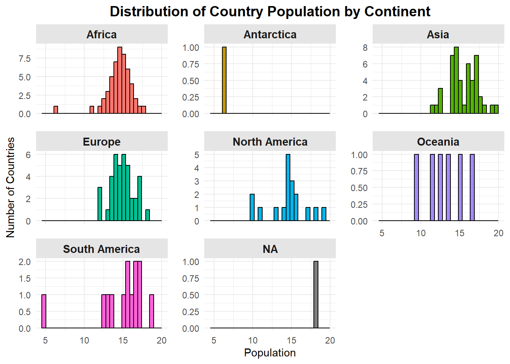
ggplot(sf.data_pop, aes(x = population)) +
geom_histogram(bins = 30, aes(fill = continent), colour = 'black') +
facet_wrap(~ continent, scales = "free_y") +
labs(
title = 'Distribution of Country Population by Continent',
x = 'Population',
y = 'Number of Countries'
) +
theme_minimal() +
theme(
plot.title = element_text(face = "bold", size = 14, hjust=0.5),
plot.subtitle = element_text(size = 11, color = "gray40", hjust=0.5),
strip.text = element_text(face = "bold", size = 11),
strip.background = element_rect(fill = "gray90", colour = NA),
panel.spacing = unit(1, "lines"),
legend.position = "none"
)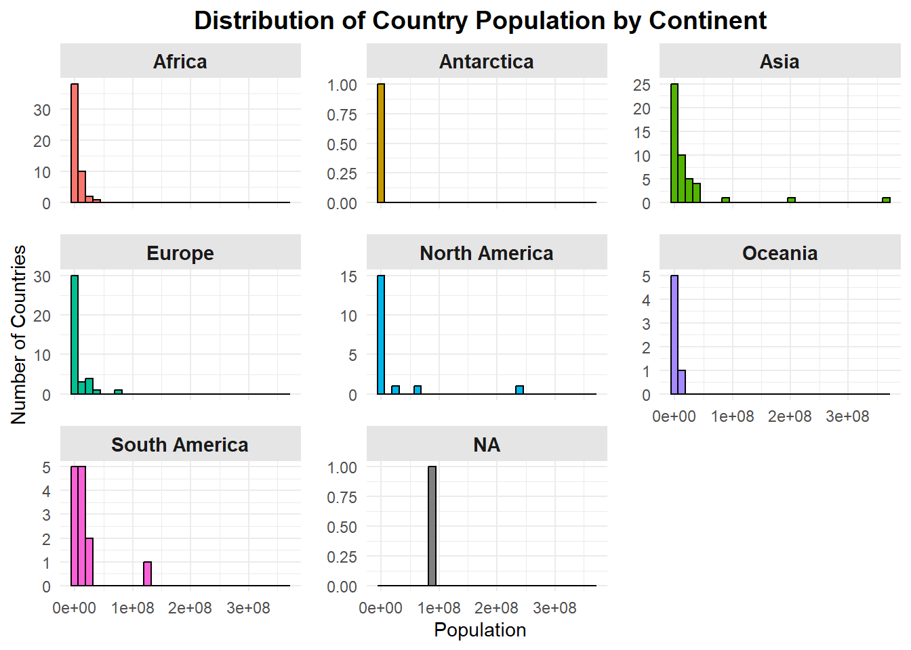
By plotting the population distributions by continent without the log scale we clearly see exactly the same as before, there are some outliers in each continent that make the distribution skewed to the left.
# Use data set sf.data
# Compute distance between cities and ports and airports by country
# Combine ports and airports
library(units)
sf.transport <- sf.data %>% filter(type %in% c('PORT', 'AIRPORT'))
sf.locations <- sf.data %>% filter(type == 'CITY')
# Calculate distance matrix to all transport hubs
distance_matrix <- st_distance(sf.locations$geom, sf.transport$geom)
# Get minimum distance for each city
sf.locations <- sf.locations %>%
mutate(
distance_to_nearest = apply(distance_matrix, 1, min),
distance_km = as.numeric(distance_to_nearest) / 1000 # Convert to km
)
# Calculate country-level averages
country_distances <- sf.locations %>%
st_drop_geometry() %>%
group_by(country, continent) %>%
summarize(avg_distance_km = mean(distance_km, na.rm = TRUE),
.groups = 'drop') %>%
filter(!is.na(continent))# plot
ggplot(country_distances, aes(x = avg_distance_km)) +
geom_histogram(bins = 20, aes(fill = continent), colour = 'black', alpha = 0.8) +
facet_wrap(~ continent, scales = "free_y") +
labs(
title = 'Distribution of Country Average Distances to Nearest Transport Hub',
subtitle = 'Average distance from cities to nearest airport or port by continent',
x = 'Average Distance',
y = 'Number of Countries'
) +
theme_minimal() +
theme(
plot.title = element_text(face = "bold", size = 14, hjust=0.5),
plot.subtitle = element_text(size = 11, color = "gray40", hjust=0.5),
strip.text = element_text(face = "bold", size = 11),
strip.background = element_rect(fill = "gray90", colour = NA),
panel.spacing = unit(1, "lines"),
legend.position = "none"
)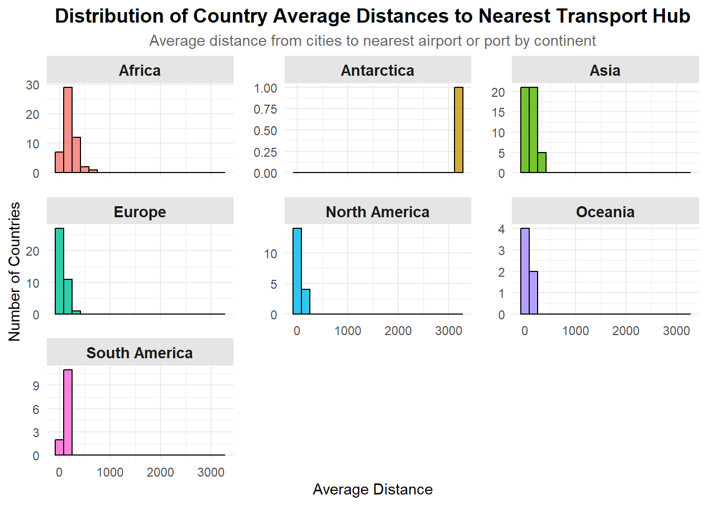
With the average distance in km for each continent, we cannot extract much information when we compare the distribution across continents. We take the log again.
ggplot(country_distances, aes(x = log(avg_distance_km))) +
geom_histogram(bins = 20, aes(fill = continent), colour = 'black', alpha = 0.8) +
facet_wrap(~ continent, scales = "free_y") +
labs(
title = 'Log Distribution of Country Average Distances to Nearest Transport Hub',
subtitle = 'Log Average distance from cities to nearest airport or port by continent',
x = 'Log Average Distance',
y = 'Number of Countries'
) +
theme_minimal() +
theme(
plot.title = element_text(face = "bold", size = 14, hjust=0.5),
plot.subtitle = element_text(size = 11, color = "gray40", hjust=0.5),
strip.text = element_text(face = "bold", size = 11),
strip.background = element_rect(fill = "gray90", colour = NA),
panel.spacing = unit(1, "lines"),
legend.position = "none"
)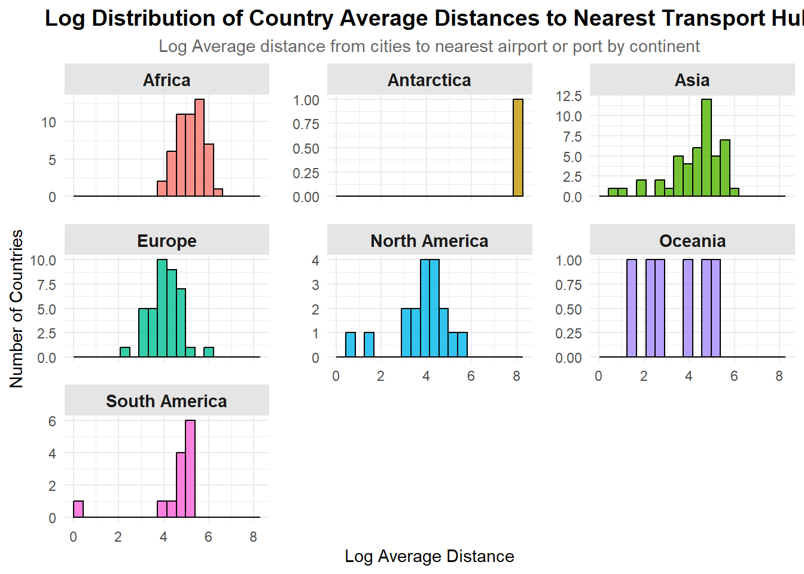
From the plots above using the log transformation, several insights can be highlighted. Africa shows higher average distances between cities and transport hubs compared to Europe, which may reflect less developed infrastructure, greater geographic dispersion of cities, or the continent’s larger land area. Europe and North America present similar distributions, with most countries clustered at lower average distances, suggesting well-developed and accessible transport networks.
South America shows less variability in average distances than Africa but centers around similar mean values, indicating moderate transport accessibility with less inter-country variation. Oceania, with fewer countries, exhibits high variability in average distances, likely due to the diverse geographic characteristics of island nations versus continental Australia. Asia displays the widest distribution, with many countries showing high average distances, potentially reflecting the continent’s vast size, varied development levels, and geographic diversity.
Q1. Generate an sf POINT feature of marketplaces across Africa; plot them
Q2. Calculate minimum distance of each market to the (i) coast, (ii) nearest road, and (iii) nearest airport
Q3. Produce 3 scatter plots relating average prices with the minimum distances
Porteous, O., 2019. High trade costs and their consequences: An estimated dynamic model of African agricultural storage and trade. American Economic Journal: Applied Economics, 11(4), pp.327-66.
Direct link: Paper
To complete this assignment, we will need data from several sources. First, we will use the spData library, which contains the world shapefile. In addition, we will need datasets for roads, highways, airports, and the coastline, as well as data from the replication paper that features marketplaces across Africa.
Sources:
First we create a polygon from the world shape file in spData so we can use it to filter through intersections with other datasets
We load the different shapefiles for the roads, the coastline and the airports:
africa_roads_raw<-st_read("Data/groads-v1-africa-shp/gROADS-v1-africa.shp", quiet = TRUE) #Roads data
africa_roads_clean<- africa_roads_raw %>%
filter(LENGTH_KM >= 20) %>%
st_crop(africa_poly) %>%
st_intersection(africa_poly)
coastline<-st_read("Data/ne_10m_coastline/ne_10m_coastline.shp", quiet = TRUE)
coastline_africa <- st_intersection(coastline, africa)
airports<-st_read("Data/ne_10m_airports/ne_10m_airports.shp", quiet = TRUE)
airports_africa <- st_intersection(airports, africa)For the Africa roads layer, we apply two filters. First, we keep only roads with LENGTH_KM >= 20 so that smaller roads are not considered. We choose this for a couple of reasons; first, because computationally it is very expensive to compute intersections and distances for over 500k+ road observations, so reducing the size of this dataset is beneficial to the efficiency of our task execution; second, because this is a much more relevant analysis of the data – we care more about the distance a market has to a more important, well-connected road than it does to some random neighborhood or back road that may only spans one kilometer and connects to very few homes.
Second, we clip the roads to the Africa polygon (africa_poly) derived from the world dataset, because the roads shapefile also includes features from the Middle East and the southern part of Europe. We use st_intersection() for an exact spatial clip to Africa and we apply the same concept to the coastline data and the airports data.
First, we load the data from the market places from the replication package:
ggplot() +
geom_sf(data = africa, fill = "grey95", color = "grey40", linewidth = 0.3) +
geom_sf(data = mkt_pts, aes(color = "Markets"), size = 1) +
scale_color_manual(
name = "Legend",
values = c("Markets" = "red")
) +
guides(
color = guide_legend(
override.aes = list(size = 3, shape = 16)
)
) +
labs(title = "Markets in Africa")+
theme_void() +
theme(
legend.background = element_rect(fill = "white", color = "black", linewidth = 0.5),
legend.margin = margin(6, 6, 6, 6),
legend.title = element_text(face = "bold"),
plot.title = element_text(hjust=0.5)
)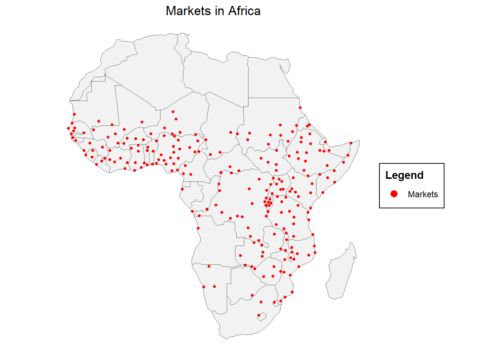
To construct this plot, we use a filtered Africa polygon obtained from the world dataset in the spData package, together with market location points from the replication data. The figure shows that all marketplaces are located south of the Sahara Desert, with particularly high concentrations in a subset of countries.
We can combine what we have obtained before with the roads data to obtain the following plot:
ggplot() +
geom_sf(data = africa, fill = "grey95", color = "grey30", linewidth = 0.3) +
geom_sf(data = africa_roads_clean, aes(color = "Roads"),
linewidth = 0.3, key_glyph = draw_key_path) +
geom_sf(data = mkt_pts, aes(color = "Markets"), size = 1) +
scale_color_manual(
name = "Legend",
values = c(
"Markets" = "red",
"Roads" = "grey30"
),
breaks = c("Markets", "Roads")
) +
guides(
color = guide_legend(
override.aes = list(
linewidth = c(0, 1),
shape = c(16, NA),
size = c(3, 0)
)
)
) +
labs(title = "Roads and Markets in Africa") +
theme_void() +
theme(
legend.background = element_rect(fill = "white", color = "black", linewidth = 0.5),
legend.margin = margin(6, 6, 6, 6),
legend.title = element_text(face = "bold"),
plot.title = element_text(hjust=0.5)
)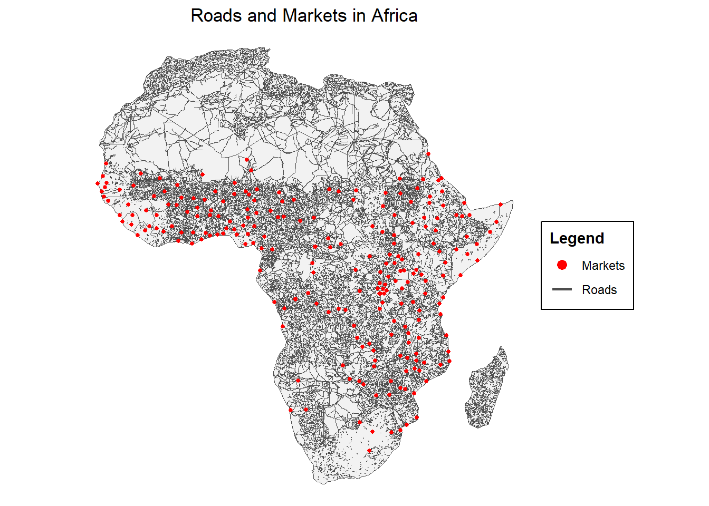
And combine the previous plot with the the coast and airport data:
ggplot() +
# Africa background
geom_sf(data = africa, fill = "grey95", color = "grey40", linewidth = 0.4) +
# Roads
geom_sf(
data = africa_roads_clean,
aes(color = "Roads"),
linewidth = 0.3,
alpha = 0.6,
key_glyph = draw_key_path
) +
# Coastline
geom_sf(
data = coastline_africa,
aes(color = "Coastline"),
linewidth = 0.4,
key_glyph = draw_key_path
) +
# Airports
geom_sf(
data = airports_africa,
aes(color = "Airports"),
size = 1.2,
alpha = 0.8
) +
# Market points
geom_sf(
data = mkt_pts,
aes(color = "Markets"),
size = 1.5
) +
scale_color_manual(
name = "Legend",
values = c(
"Roads" = "grey30",
"Coastline" = "purple",
"Airports" = "#1f78b4",
"Markets" = "red"
),
breaks = c("Markets", "Airports", "Roads", "Coastline")
) +
guides(
color = guide_legend(
override.aes = list(
linewidth = c(0, 0, 1, 1),
shape = c(16, 16, NA, NA),
size = c(3, 3, 0, 0),
alpha = c(1, 1, 1, 1)
)
)
) +
labs(title = "Infrastructure and Markets in Africa") +
theme_void() +
theme(
plot.background = element_rect(fill = "white", color = NA),
legend.background = element_rect(fill = "white", color = "black", linewidth = 0.5),
legend.margin = margin(6, 6, 6, 6),
legend.title = element_text(face = "bold"),
plot.title = element_text(hjust=0.5)
)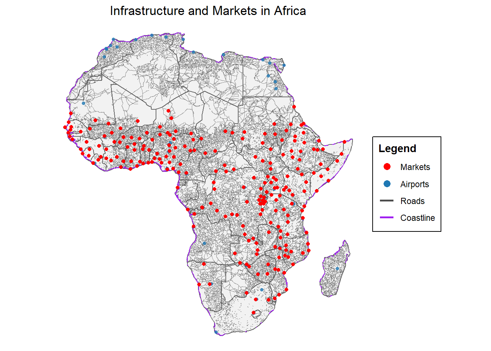
To compute the minimum distance:
We want the minimum distance for each market individually and we want to compute it efficiently and correctly, without building a huge distance matrix or mixing markets together, st_nearest_feature() tells us which feature is the closest one to each market.
Then we compute the distance only to that feature:
# Minimum distance (meters) to the nearest feature (by element)
d_coast_m <- st_distance(mkt_pts, coastline_africa[idx_coast, ], by_element = TRUE)
d_road_m <- st_distance(mkt_pts, africa_roads_clean[idx_road, ], by_element = TRUE)
d_air_m <- st_distance(mkt_pts, airports_africa[idx_airport,], by_element = TRUE)
# Attach to the markets table (convert to numeric km)
mkt_pts <- mkt_pts %>%
mutate(
dist_coast_km = as.numeric(d_coast_m) / 1000,
dist_road_km = as.numeric(d_road_m) / 1000,
dist_airport_km = as.numeric(d_air_m) / 1000
)For each market location, we compute the minimum Euclidean distance to the three types of spatial infrastructure: the coastline, the road network, and the nearest airport. This is done using the st_distance() function.
Before computing distances, each market is matched to its nearest feature of the relevant type (coast, road, or airport). Using these matches, st_distance() is applied with the option by_element = TRUE, which ensures that distances are calculated pairwise, which makes that each market is compared only to its own nearest feature rather than to all features in the dataset. As a result, the output is a vector of minimum distances, one value per market, expressed in meters, which correspond to the coordinate reference system of the spatial data.
The resulting distance vectors are then added to the markets dataset as new variables. Distances are converted from meters to kilometers by dividing by 1,000 and stored in three different variables: distance to the coast, distance to the nearest road, and distance to the nearest airport.
We can check the mean distances for each of the three variables:
Min. 1st Qu. Median Mean 3rd Qu. Max.
0.1478 178.1537 530.0659 571.5270 925.7852 1736.1293 Min. 1st Qu. Median Mean 3rd Qu. Max.
7.255e-03 9.458e-01 3.044e+00 1.165e+01 1.069e+01 1.238e+02 Min. 1st Qu. Median Mean 3rd Qu. Max.
1.11 24.30 201.73 229.19 338.24 915.61 It can be seen that each variable has very different interpretation as its values vary deeply:
Distance to coast: On average, markets are located about 572km from the coastline, indicating that many markets are substantially inland.
Distance to roads: Markets are, on average, about 11.7km away from the nearest major road, suggesting relatively good road accessibility (We have to consider the filter of minimum 20km length applied in the beginning for the roads for this interpretation, which means that if the filter was not applied we could expect a lower distance on average).
Distance to airports: The average distance to the nearest airport is approximately 229km, implying limited proximity to air transport infrastructure for most markets.
We could also inspect an specific market row:
i <- 5 # pick a market row to inspect
# ggplot() +
# geom_sf(data = africa, fill = "grey95", color = "grey40", linewidth = 0.3) +
# geom_sf(data = coastline_africa, color = "black", linewidth = 0.3) +
# geom_sf(data = africa_roads_clean, color = "grey60", linewidth = 0.3) +
# geom_sf(data = airports_africa, color = "#1f78b4", size = 1) +
# geom_sf(data = mkt_pts[i,], color = "red", size = 3) +
# geom_sf(data = airports_africa[idx_airport[i],], color = "#1f78b4", size = 4) +
# theme_void()
ggplot() +
geom_sf(data = africa, fill = "grey95", color = "grey30", linewidth = 0.3) +
geom_sf(data = coastline_africa, aes(color = "Coastline"),
linewidth = 0.3, key_glyph = draw_key_path) +
geom_sf(data = africa_roads_clean, aes(color = "Roads"),
linewidth = 0.3, key_glyph = draw_key_path) +
geom_sf(data = airports_africa, aes(color = "Other Airports"), size = 1) +
geom_sf(data = mkt_pts[i,], aes(color = "Selected Market"), size = 3) +
geom_sf(data = airports_africa[idx_airport[i],], aes(color = "Nearest Airport"), size = 4, shape = 17) +
scale_color_manual(
name = "Legend",
values = c(
"Coastline" = "purple",
"Roads" = "grey30",
"Other Airports" = "#1f78b4",
"Selected Market" = "red",
"Nearest Airport" = "gold"
),
breaks = c("Selected Market", "Nearest Airport",
"Other Airports", "Roads", "Coastline")
) +
guides(
color = guide_legend(
override.aes = list(
linewidth = c(0, 0, 0, 1, 1),
size = c(3, 3, 3, 0, 0),
shape = c(16, 17, 16, NA, NA)
)
)
) +
labs(title = "Closest Airport to a Select Market") +
theme_void() +
theme(
plot.title = element_text(hjust=0.5),
legend.background = element_rect(fill = "white", color = "black", linewidth = 0.5),
legend.margin = margin(6, 6, 6, 6),
legend.title = element_text(face = "bold")
)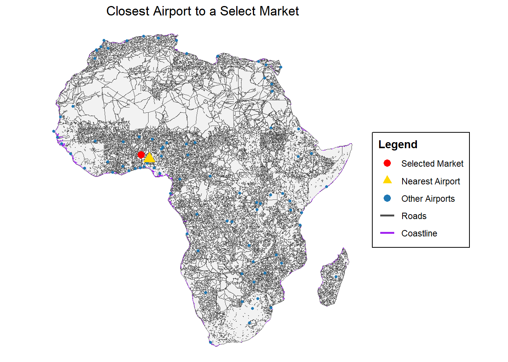
We can also construct lines to see the distance:
lines_airport <- st_nearest_points(
mkt_pts,
airports_africa[idx_airport, ],
pairwise = TRUE
) %>%
st_sf()
lines_coast <- st_nearest_points(
mkt_pts,
coastline_africa[idx_coast, ],
pairwise = TRUE
) %>%
st_sf()
lines_road <- st_nearest_points(
mkt_pts,
africa_roads_clean[idx_road, ],
pairwise = TRUE
) %>%
st_sf()We construct LINESTRING geometries representing the minimum (nearest-neighbor) distance from each market location to key infrastructure features. Using st_nearest_points(), we connect each market to its closest airport, coastline, and road segment.
We can plot this:
ggplot() +
geom_sf(data = africa, fill = "grey95", color = "grey40", linewidth = 0.3) +
geom_sf(data = lines_coast, aes(color = "Distance to Coast"), linewidth = 0.4) +
geom_sf(data = lines_road, aes(color = "Distance to Road"), linewidth = 0.4) +
geom_sf(data = lines_airport, aes(color = "Distance to Airport"), linewidth = 0.6) +
geom_sf(data = airports_africa, aes(color = "Airport"), size = 1) +
geom_sf(data = mkt_pts, aes(color = "Market"), size = 2) +
scale_color_manual(
name = "Legend",
values = c(
"Market" = "red",
"Airport" = "blue",
"Distance to Coast" = "black",
"Distance to Road" = "green",
"Distance to Airport" = "#1f78b4"
)
) +
labs(title = "Distance between Markets and Closest Infrastructure") +
theme_void() +
theme(
plot.title = element_text(hjust = 0.5),
legend.position = "right",
legend.background = element_rect(fill = "white", color = "black", linewidth = 0.5),
legend.margin = margin(t = 5, r = 5, b = 5, l = 5),
legend.title = element_text(face = "bold", size = 10)
)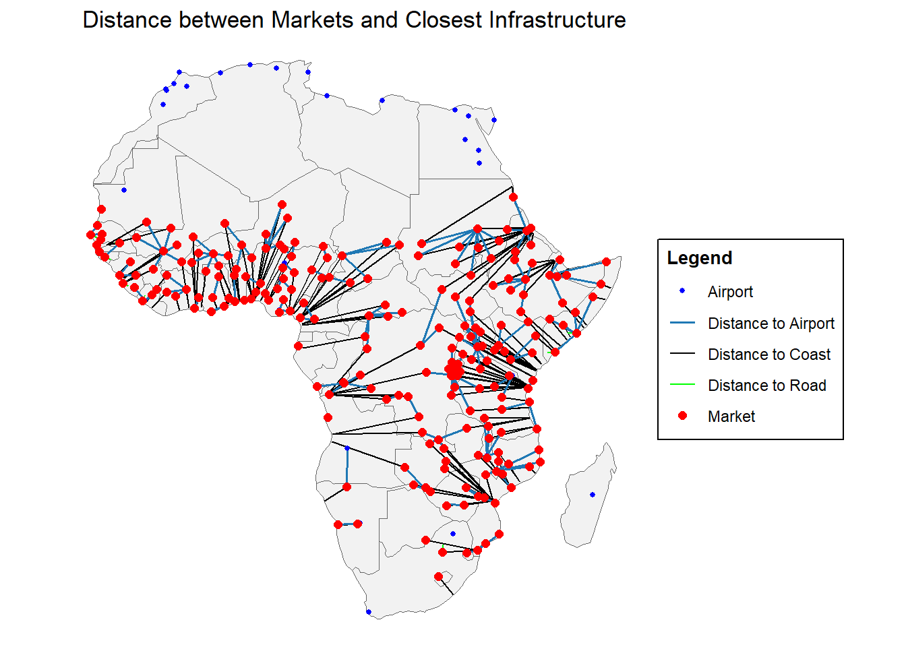
First, we obtain the price data from the replication package and compute, for each market, the average price across all time periods and across all crops. The raw price data contain multiple columns corresponding to different time periods. Some observations contain many NA or 0 values, for which we convert all to NA and calculate the average price over all available time periods.
# import dataset from excel sheet
prices_raw <- read_excel("Data/markets/MktPrices.xlsx", sheet = "Sheet1")
# extract all the numeric column names (prices)
price_cols <- names(prices_raw)[grep("^\\d+$", names(prices_raw))]
avg_prices <- prices_raw %>%
mutate(
across(all_of(price_cols), ~ na_if(., 0)),
price = rowMeans(pick(all_of(price_cols)), na.rm=T)
) %>%
group_by(mktcode) %>%
summarize(avg_price = mean(price, na.rm=T))Once we have obtained the average values we can merge the two datasets by mktcode
We construct three scatter plots relating average market prices to the minimum distance to the coast, the nearest road, and the nearest airport.
ggplot(st_drop_geometry(mkt_pts), aes(x = dist_coast_km, y = avg_price)) +
geom_point(alpha = 0.6) +
geom_smooth(method = "lm", se = FALSE) +
theme_minimal() +
labs(x = "Distance to coast (km)", y = "Average price",
title = "Average prices vs Distance to coast") +
theme(plot.title = element_text(hjust=0.5))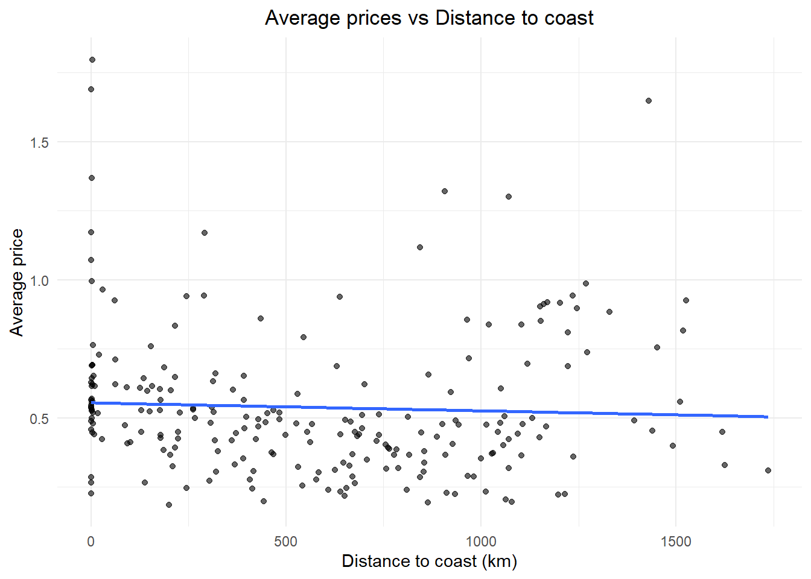
ggplot(st_drop_geometry(mkt_pts), aes(x = dist_road_km, y = avg_price)) +
geom_point(alpha = 0.6) +
geom_smooth(method = "lm", se = FALSE) +
theme_minimal() +
labs(x = "Distance to nearest road (km)", y = "Average price",
title = "Average prices vs distance to nearest road") +
theme(plot.title = element_text(hjust=0.5))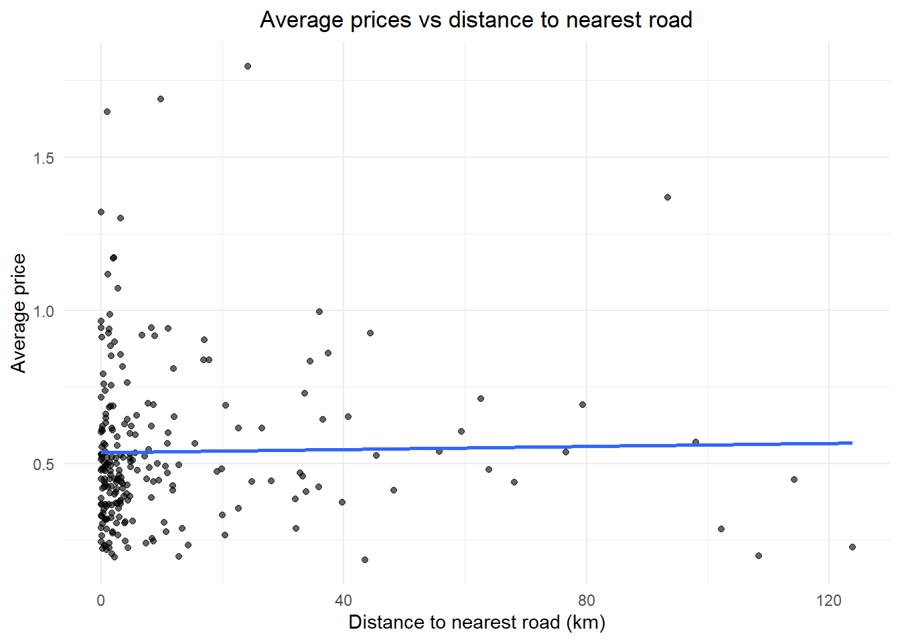
ggplot(st_drop_geometry(mkt_pts), aes(x = dist_airport_km, y = avg_price)) +
geom_point(alpha = 0.6) +
geom_smooth(method = "lm", se = FALSE) +
theme_minimal() +
labs(x = "Distance to nearest airport (km)", y = "Average price",
title = "Average prices vs distance to nearest airport") +
theme(plot.title = element_text(hjust=0.5))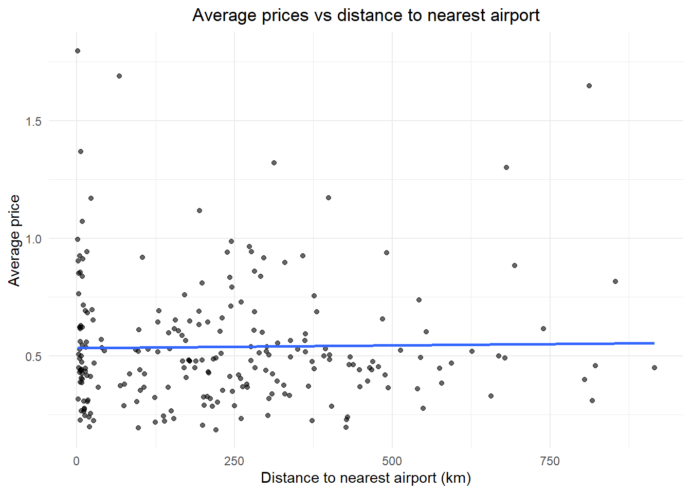